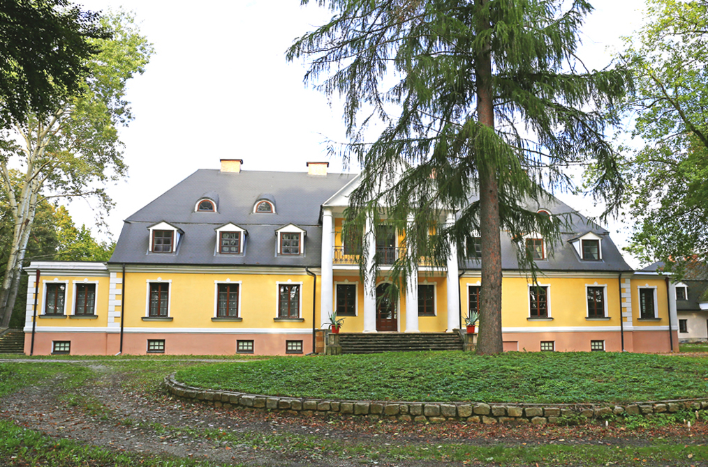
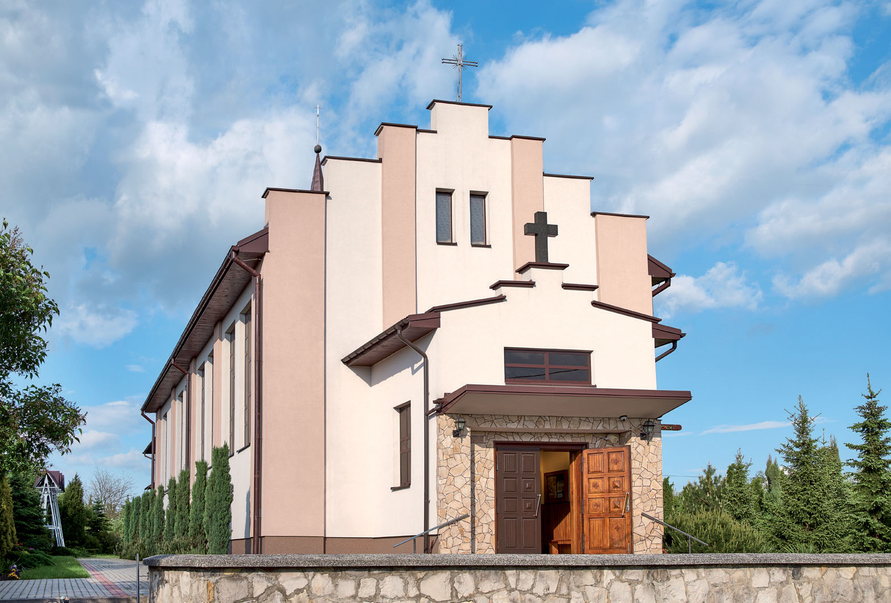

Zbydniów
Zbydniów – wieś w Polsce, położona w województwie podkarpackim, w powiecie stalowowolskim, w gminie Zaleszany. Stara wieś rozciąga się na lewym brzegu Sanu, którego główne koryto przez setki lat biegło obok wsi. Okolica jest równiną piaszczystą, dobrze nawodnioną. Na południe ciągnie się duży bór sosnowy zwany "Czarną niwą".
Do 1954 roku istniała gmina Zbydniów. W latach 1975–1998 miejscowość należała administracyjnie do województwa tarnobrzeskiego. W roku 2012 Rada Gminy Zaleszany nadała we wsi Zbydniów nazwy ulicom.


źrodło:
Wikipedia